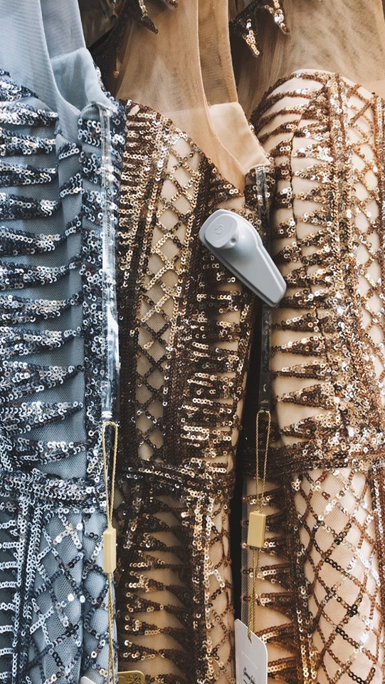

Glamour Fashion: En succes historie
Glamour Fashion’s hovedfokus har fra start været at det skal være nemmere for religiøse kvinder at finde tøj som respekterer deres religion og som er tildækkende. Dette var noget Rania, butiksejeren, selv havde svært ved at finde. Samtidig med, at tøjet skulle være tildækkende var det vigtigt,
at det stadig var pænt og moderne. Kvinderne skulle ikke gå med den følelse, at de var nødt til at gå med det her fordi der ikke var andre muligheder. De skulle netop have mulighed for at udtrykke deres personlighed med det tøj, som er at finde i butikken. Det skal passe til enhver stil.
Rania Eljashe
Rania Eljashe, er 46 år gammel og er født i Libanon, hun kom til Danmark i 1987 og har boet her til nu. Rania har altid ønsket, at få en uddannelse, her afsluttede hun sin uddannelse i Danmark, som industrilaborant, og derefter startede hun på bioanalytiker uddannelsen, samtidig havde hun en butik sammen med hendes mand i Bazar vest ved siden af hendes studie.
Rania går meget op i sin religion, det betød at det var meget svært for hendes som studerende på bioanalytiker studiet grundet hun gik med tørklæder og der var der visse udfordringer i forhold til hygiejne. Derfor tog Rania valget om at droppe ud af bioanalytiker studiet og i stedet for valgte hun at koncentrere sig 100 % om butikken. På daværende tidspunkt var butikken en outlet butik med børnetøj og børneudstyr. Dog var der ikke nok kunder til at hun kunne blive ved med at handle med børnetøj og derfor skiftede hun langsomt over til at handle med dametøj fremfor børnetøj.
Galla Kjoler

Ideen med dametøj, kom en dag hvor Rania tog til hovedstaden, København, for at finde nyt tøj til hende selv. Her faldt hun i snak med butikkens ejer, som kom med den ide om, om Rania ikke selv skulle prøve og sælge tøj til kvinder, og at butiksejeren, gerne ville hjælpe hende med at levere tøj til hendes butik i Bazar vest. Rania har altid selv haft det problem med at finde noget pænt og feminint tøj, som var tildækkende, så derfor var dette en oplagt mulighed, at hun kunne skabe en butik, som sælger pænt, feminint tøj til tildækkede kvinder. Langsomt blev Glamour Fashion en succes, og i dag sælger Rania flotte galla- og brudekjoler, som hun skræddersyer til hendes kunder, samt har hun masser af flot hverdagstøj til alle nationaliteter til gode og fornuftige priser.